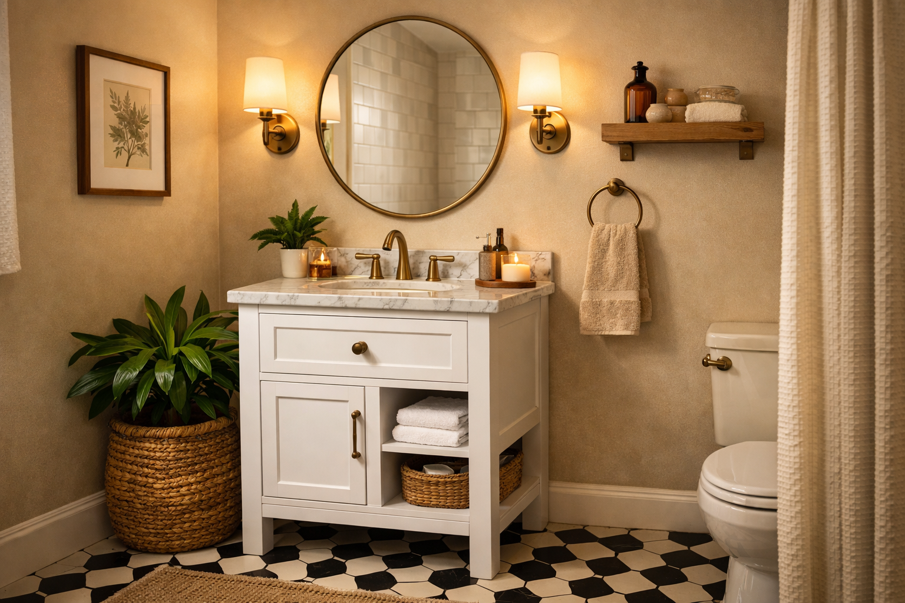

Best Small Bathroom Vanities for Tight Spaces (2026)

Home & Bathroom Expert | Specialist in space-saving solutions
This article contains affiliate links. If you purchase through these links, we may earn a small commission at no extra cost to you. Full disclosure.
Quick Answer: Best Small Bathroom Vanity?
The Malwee 18" Floating Vanity ($228) is our top pick for the smallest spaces, while the Yaheetech 24.5" Modern Vanity ($149.99) wins for best value in the 24-inch category. Both include sinks and deliver quality that exceeds their price.

Small bathrooms deserve great vanities too, but finding one that actually fits without sacrificing style or storage is a real challenge. Standard vanities start at 30 inches, which is simply too wide for many powder rooms, half baths, and apartment bathrooms.
We researched and evaluated over 15 compact vanities specifically designed for small bathrooms, from ultra-narrow 18-inch models to space-smart 24-inch designs. Every vanity on this list was chosen for its ability to maximize functionality in minimal square footage.
Whether you need a wall-mounted floating design that creates visual space, or a freestanding unit with clever storage, this guide has you covered. Wondering about the full size range? Check our complete bathroom vanity roundup for all sizes.
Our picks range from $149.99 to $483.99, proving that small bathroom vanities do not need to break the bank. Every product has been verified for quality through real customer reviews.

Malwee 18" Floating Bathroom Vanity
The most compact quality vanity available. Wall-mounted design saves floor space while the ceramic basin top looks premium. Perfect for powder rooms and half baths.
Check Price on AmazonWhy Getting Your Small Bathroom Vanity Size Right Matters
In a small bathroom, every inch counts. A vanity that is even 2 inches too wide can make the difference between a comfortable bathroom and one where you are constantly bumping into things. The wrong vanity turns your small bathroom into a frustrating daily experience.
The Space Equation
The National Kitchen and Bath Association (NKBA) recommends a minimum of 21 inches of clear floor space in front of a bathroom vanity. In a small bathroom, this means you need to carefully calculate your available wall space minus the required clearances for the door, toilet, and shower or tub access.
Beyond physical fit, visual proportions matter enormously in small spaces. An oversized vanity makes a small bathroom feel even smaller, while a properly scaled vanity can actually make the room feel more spacious than it is.
Key Benefits of Right-Sized Small Vanities
- Better Traffic Flow: Proper clearance around the vanity prevents daily frustrations and makes the bathroom usable for everyone, including guests.
- Visual Space: A proportionally correct vanity creates the illusion of more room, especially when combined with floating designs and light colors.
- Smart Storage: Modern small vanities are engineered to maximize every cubic inch of storage, often outperforming larger vanities in organization efficiency.
- Easier Cleaning: Floating vanities in particular make mopping and cleaning much simpler in tight quarters. According to the EPA's Indoor Air Quality guidelines, reducing moisture-trapping surfaces in small bathrooms helps prevent mold growth.
- Higher Home Value: A well-fitted small bathroom with a quality vanity is more appealing to buyers than one crammed with an oversized unit.
Floating vs. Freestanding for Small Bathrooms
In small spaces, the choice between floating and freestanding vanities has an outsized impact.
- Floating Vanities: Mount to the wall, revealing the floor beneath. This creates a powerful visual illusion of more space and allows for under-vanity storage baskets. Ideal for bathrooms under 40 sq ft. For more options, see our floating vanity guide.
- Freestanding Vanities: Rest on the floor like traditional furniture. Generally offer more enclosed storage and are easier to install. Work well in bathrooms 40-60 sq ft.
- Corner Vanities: Designed to tuck into corners, utilizing otherwise wasted space. Best for oddly shaped bathrooms or when the vanity wall is very narrow.
- Pedestal Alternatives: If you only need a sink (minimal storage), consider a small wall-mounted sink with a separate medicine cabinet for storage.
For most small bathrooms, we recommend floating vanities as the first choice due to their space-enhancing visual effect and floor-cleaning convenience.
How We Selected These Small Bathroom Vanities
We focused specifically on vanities 30 inches and under, evaluating them against criteria that matter most in compact spaces.
Selection Criteria & Weighting
- Space Efficiency (30%): How well the vanity utilizes its footprint. Storage capacity relative to external dimensions, clever organizational features.
- Build Quality (25%): Materials, hardware, moisture resistance, and finish durability. Small does not mean cheap.
- Visual Space Impact (20%): Does the vanity make the bathroom feel larger or smaller? Light colors, floating designs, and clean lines score highest.
- Installation Ease (15%): Important in small bathrooms where working space is limited. Clear instructions and minimal tools required.
- Value for Money (10%): Overall quality relative to price, included accessories, and long-term durability.
Our Evaluation Process
We analyzed customer reviews from verified purchases, paying special attention to comments about fit in small bathrooms, actual dimensions vs. listed dimensions, and real-world storage capacity. Products with discrepancies between listed and actual sizes were flagged.
We also evaluated shipping damage rates, as small vanities with ceramic sinks can be vulnerable during transit. Products with reliable packaging and low damage complaint rates earned higher scores.
Top 5 Best Small Bathroom Vanities
1. Malwee 18" Floating Bathroom Vanity with Sink
Best For: Ultra-small bathrooms, powder rooms, half baths
- Ultra-compact 18-inch wall-mounted design
- White ceramic basin top included
- 1 soft-close door with interior storage
- Wall-mounted to maximize floor space
- Space-saving design for the tightest bathrooms
Pros
- Only 18" wide - fits anywhere
- Highest rated vanity in our lineup (4.8)
- Floating design creates visual space
- Ceramic top looks much more expensive
Cons
- Very limited counter space
- Requires wall-stud mounting
The Malwee 18-inch is the ultimate space saver. At just 18 inches wide, it fits into bathrooms where you thought a vanity was impossible. The wall-mounted design opens up the floor beneath, making even a tiny powder room feel breathable. The white ceramic basin is smooth, easy to clean, and looks far more premium than the $228 price tag suggests.
With a 4.8 rating from 114 reviews, quality is undeniable. The single soft-close door opens to reveal enough storage for essentials: hand soap refills, a few washcloths, and cleaning supplies. For additional storage, pair with a medicine cabinet or floating shelf above.
Check Price on Amazon
2. Yaheetech 24.5" Modern Vanity with Ceramic Basin
Best For: Budget renovations, apartment bathrooms, guest baths
- Ceramic undermount basin included
- 2 soft-closing doors + 1 drawer
- Freestanding design for easy installation
- Adjustable internal shelf
- Clean white finish brightens small spaces
Pros
- Under $150 for a complete vanity with sink
- 252 reviews confirm reliable quality
- More storage than most 24" vanities
- Simple 1-person assembly
Cons
- MDF construction (not solid wood)
- Faucet not included
At $149.99, the Yaheetech is the clear winner for budget-conscious shoppers. Despite the low price, it offers more storage than many vanities twice its cost: 2 doors, 1 drawer, and an adjustable internal shelf. The white finish keeps small bathrooms feeling bright and open. Also featured in our overall best vanities list.
With 252 verified reviews, this is the most battle-tested vanity in our small bathroom lineup. Recurring praise highlights easy assembly, surprisingly good quality for the price, and the included ceramic basin that looks and feels premium.
Check Price on Amazon
3. SUNTAGE 24" Modern Floating Vanity with Double Drawers
Best For: Modern small bathrooms, contemporary style
- Wall-mounted floating design
- Double drawers for organized storage
- White resin sink combo included
- Black handles for modern contrast
- Available in black and white finishes
Pros
- Double drawers beat single-door storage
- Modern floating look at a budget price
- Black handles add contemporary flair
- Floor space preserved for easy cleaning
Cons
- Resin sink less durable than ceramic
- Wall mounting requires studs
The SUNTAGE delivers a sleek modern floating vanity at an accessible price point. The double-drawer design is a significant advantage over single-door competitors, allowing you to organize toiletries separately from cleaning supplies. The black handles against a white or black finish create a sharp contemporary look. For more floating options, see our dedicated floating vanity guide.
At $215.99, this is one of the most affordable floating vanities available with a sink included. The white resin sink is easy to clean, though not as durable as ceramic over the very long term. For the price and style, it is a strong contender for any small modern bathroom.
Check Price on Amazon
4. AmbroVania 24" Floating Vanity with Marble Top
Best For: Upscale small bathrooms, spa-inspired design
- Ultra-thin ceramic basin with marble-look top
- Extra-large soft-close storage drawer
- Wall-mounted floating installation
- Natural wood finish for warmth
- Premium hardware throughout
Pros
- Marble-top look elevates any bathroom
- 4.7 rating from 96 discerning buyers
- Natural wood adds warmth to small spaces
- Extra-large drawer fits more than expected
Cons
- Higher price point for a 24" vanity
- Only one storage drawer
If your small bathroom renovation budget allows for a premium choice, the AmbroVania is worth every penny. The marble-look ceramic basin creates a spa-like atmosphere that transforms even the tiniest bathroom into a luxury retreat. The natural wood finish adds warmth that balances the coolness of the ceramic beautifully.
The single extra-large drawer is surprisingly spacious, and the soft-close mechanism gives it a high-end feel. At $483.99, it costs more than other 24-inch options, but the quality jump is noticeable. For a small bathroom where the vanity is the star of the show, this is our premium recommendation.
Check Price on Amazon
5. APRILSOUL 24" Mid-Century Vanity in Walnut
Best For: Mid-century modern style, warm aesthetics
- Ceramic sink included
- 2 soft-closing doors
- Beautiful walnut wood-grain finish
- Freestanding design for easy setup
- Particle board with laminate finish
Pros
- Unique walnut finish stands out
- Mid-century aesthetic is timeless
- Ceramic sink is durable and elegant
- No wall mounting needed
Cons
- Fewer reviews (newer product)
- Particleboard base (less moisture-resistant)
The APRILSOUL brings mid-century modern charm to small bathroom vanities with its beautiful walnut finish. Unlike the all-white options that dominate this category, the warm wood tones create a cozy, inviting atmosphere that works beautifully in small spaces.
The 2 soft-closing doors provide decent cabinet storage, and the ceramic sink is a quality inclusion at this price. While it is a newer product with fewer reviews, the early feedback is positive. If your small bathroom leans toward warm, natural aesthetics, this is a standout choice. Learn more about choosing the right vanity in our complete buying guide.
Check Price on AmazonSmall Bathroom Vanity Size Comparison
| Product | Width | Type | Rating | Price |
|---|---|---|---|---|
| Malwee Floating | 18" | Wall-Mounted | 4.8/5.0 | $228.00 |
| Yaheetech Modern | 24.5" | Freestanding | 4.4/5.0 | $149.99 |
| SUNTAGE Floating | 24" | Wall-Mounted | 4.1/5.0 | $215.99 |
| AmbroVania Premium | 24" | Wall-Mounted | 4.7/5.0 | $483.99 |
| APRILSOUL Walnut | 24" | Freestanding | 4.4/5.0 | $279.99 |
Small Bathroom Vanity Buying Guide
Buying a vanity for a small bathroom requires extra attention to detail. Here is what to focus on. For the complete picture, read our full bathroom vanity buying guide.
Measuring Your Space Correctly
Accurate measurements are critical in small bathrooms. Use a tape measure and follow these steps:
- Wall Width: Measure the available wall space at floor level AND at 36 inches high (walls are not always perfectly straight).
- Depth Clearance: Measure from the wall to any obstruction (toilet, door swing, tub). Ensure at least 21 inches of clear space in front of the vanity.
- Plumbing Location: Note the exact position of water supply lines and drain. The vanity must align with existing plumbing unless you plan to relocate it.
- Door Clearance: Open the bathroom door fully and ensure it will not hit the vanity. This is the most common mistake in small bathroom vanity purchases.
Storage Maximization Strategies
Small vanities require smart storage thinking.
- Drawers Beat Doors: Drawers let you see and access everything at once, while cabinet doors require bending and reaching behind items. Prioritize vanities with at least one drawer.
- Internal Organizers: Look for vanities with adjustable shelves or built-in dividers. Add aftermarket organizers if needed.
- Above-Vanity Storage: Pair your small vanity with a medicine cabinet or floating shelves above. This doubles your effective storage without adding floor footprint.
Color and Finish for Small Spaces
Color choices significantly impact how spacious your small bathroom feels.
- White and Light Colors: Reflect light and make spaces feel larger. White vanities are the most popular choice for small bathrooms for good reason.
- Natural Wood Tones: Add warmth without darkening the space, especially lighter woods like oak and maple.
- Dark Colors: Use sparingly in small bathrooms. A dark vanity can work as a design accent if walls and floor are light-colored, but avoid it in bathrooms under 30 sq ft.
Maintenance Tips for Small Bathroom Vanities
Small bathrooms generate more humidity per square foot than larger ones, making proper vanity maintenance even more important.
Weekly Maintenance
- Wipe down all surfaces after showers to prevent moisture buildup. A squeegee or microfiber cloth works best.
- Run the bathroom exhaust fan for at least 20 minutes after showering to reduce humidity around the vanity.
- Check around the base of freestanding vanities for water pooling, which accelerates deterioration.
Monthly Deep Cleaning
- Empty all drawers and cabinets. Wipe interiors with a dry cloth to remove trapped moisture.
- Check all plumbing connections under the sink for slow leaks or condensation.
- Clean the sink overflow hole with a small brush to prevent odor buildup.
- Apply a thin coat of paste wax to painted or lacquered surfaces for added moisture protection.
Signs It Is Time to Replace
- Visible swelling or bubbling on cabinet surfaces (indicates moisture damage to the core material).
- Persistent musty smell even after thorough cleaning.
- Hardware corrosion or drawer mechanisms that no longer function smoothly.
- Any mold visible on or inside the vanity cabinet.
Frequently Asked Questions About Small Bathroom Vanities
Q: What is the smallest bathroom vanity you can buy?
The smallest standard bathroom vanities are 18 inches wide. The Malwee 18-inch floating vanity is our top pick for ultra-compact spaces, fitting into powder rooms and half baths where space is extremely limited.
Q: Can you put a 24-inch vanity in a small bathroom?
Yes, a 24-inch vanity works well in bathrooms as small as 30-40 square feet. It provides adequate counter space and storage while leaving enough room for comfortable movement around the toilet and shower.
Q: Is a floating vanity better for a small bathroom?
Yes, floating vanities are excellent for small bathrooms because they create the illusion of more floor space, making the room feel larger. They also make floor cleaning easier and allow storage baskets to be placed underneath. See our floating vanity guide for top picks.
Q: What is the ideal vanity height for a small bathroom?
Standard vanity height is 30-32 inches, while comfort height is 34-36 inches. For small bathrooms, standard height is often preferred as it feels less imposing in the space. Floating vanities can be mounted at any height you prefer.
Q: How do I maximize storage in a small bathroom vanity?
Choose vanities with internal organizers, adjustable shelves, and drawer dividers. Consider adding an over-the-toilet cabinet or floating shelves above the vanity. Wall-mounted vanities allow storage baskets underneath.
Our Final Verdict: Best Small Bathroom Vanities
After extensive evaluation, here are our top recommendations for small bathrooms:
- Best Overall: Malwee 18" Floating Vanity — The highest-rated option (4.8 stars) that fits the tightest spaces.
- Best Premium: AmbroVania 24" Floating Vanity — Marble-top luxury in a compact 24-inch package.
- Best Budget: Yaheetech 24.5" Modern Vanity — Incredible value at $149.99 with more storage than you would expect.
- Best Style: The APRILSOUL 24" Walnut vanity for those who want warm mid-century modern aesthetics in a small space.
Remember, the best small bathroom vanity is the one that fits your space perfectly, matches your storage needs, and makes you smile every time you walk in. Measure twice, order once, and enjoy your beautifully transformed small bathroom.